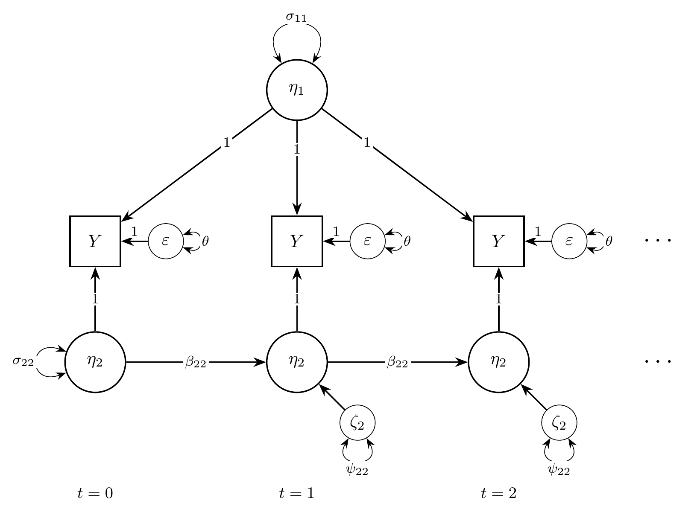
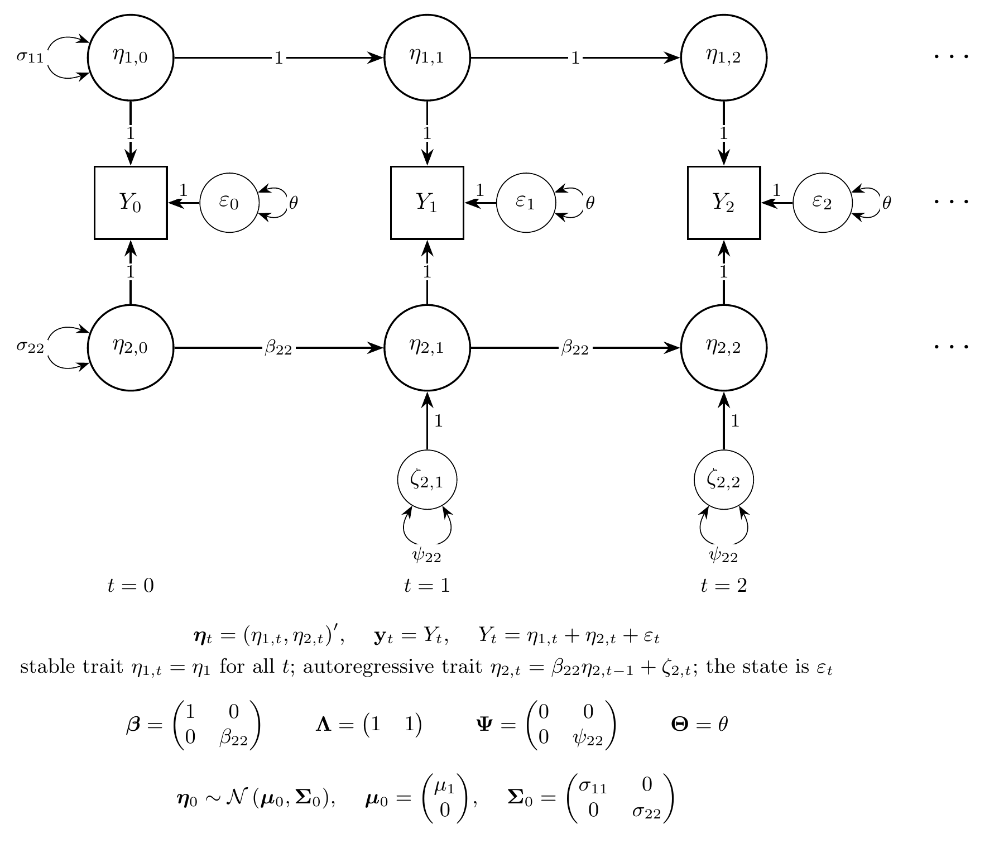
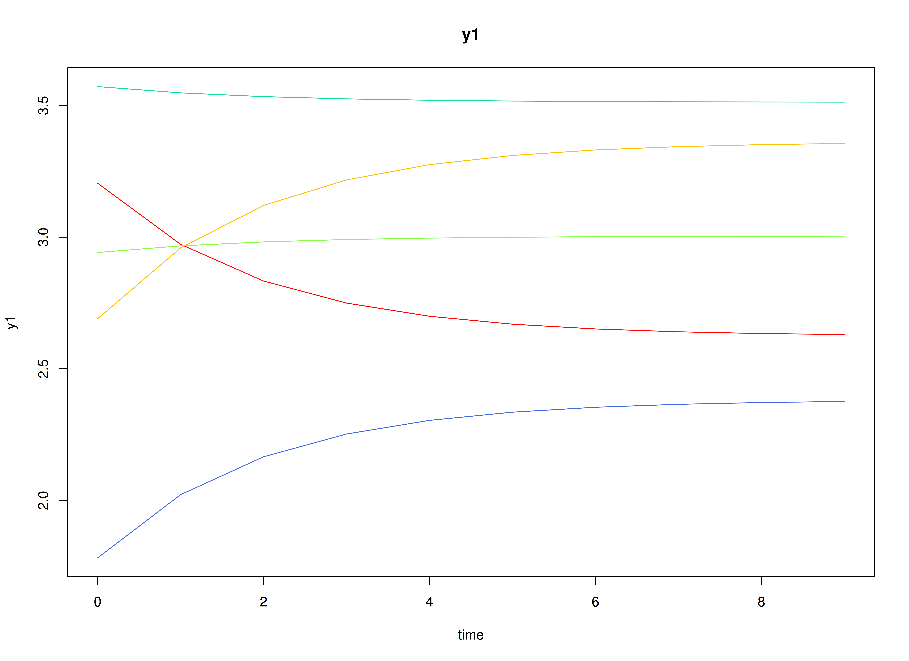
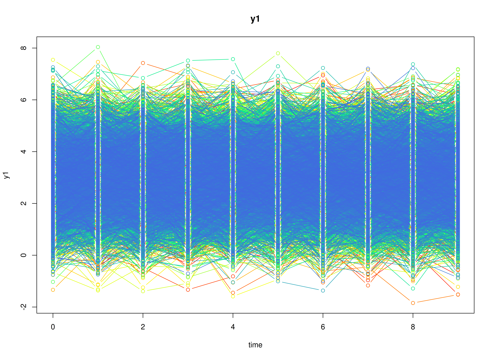
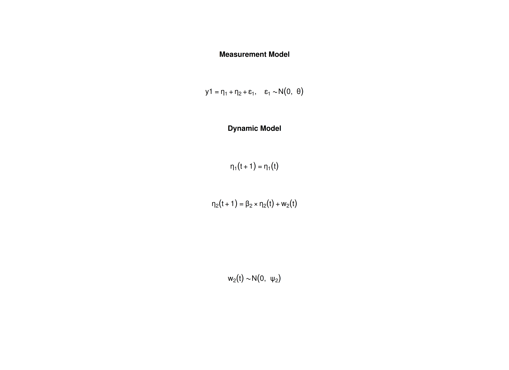

The Stable Trait, Autoregressive Trait, and State Model
Ivan Jacob Agaloos Pesigan
2026-11-05
Source:vignettes/starts.Rmd
starts.RmdOverview
The stable trait, autoregressive trait, and state (STARTS) model divides a variable measured repeatedly on the same individuals into three parts (Kenny & Zautra, 1995, 2001). Take life satisfaction measured once a year. Part of it is a stable trait that does not change over the study. Part of it is an autoregressive trait that changes slowly: a good year tends to be followed by a fairly good year. The rest is a state that belongs to one occasion only, such as the mood on the day of the survey or measurement error. The model estimates how much of the variance belongs to each part and how strongly the autoregressive part carries over.
The STARTS model is usually fitted as a structural equation model (SEM). It can also be written as a state space model: the stable trait is a latent state that never changes, the autoregressive trait is a latent state with first-order dynamics, and the state part is the measurement error.
This tutorial does three things:
- It writes the STARTS model as a state space model.
- It simulates data from the model with
SimSSMFixed(). - It fits the model to the simulated data as a state space model with
dynrandOpenMxand as a structural equation model (SEM) withlavaanandOpenMx, and compares every set of estimates with the values used to simulate the data.
No prior knowledge of state space models is needed.
Model
The measurement model is given by Y_{i, t} = \left( \begin{array}{cc} 1 & 1 \\ \end{array} \right) \left( \begin{array}{c} \eta_{1_{i, t}} \\ \eta_{2_{i, t}} \\ \end{array} \right) + \varepsilon_{i, t}, \quad \mathrm{with} \quad \varepsilon_{i, t} \sim \mathcal{N} \left( 0, \theta \right) where Y_{i, t} is the observed variable at time t and individual i, \eta_{1_{i, t}} is the stable trait, \eta_{2_{i, t}} is the autoregressive trait, and \varepsilon_{i, t} is the state. \theta is the variance of the state.
In words, the observed score is the sum of the three parts. The state \varepsilon_{i, t} is new on every occasion and does not carry over, so it plays the role of measurement error in a state space model.
The dynamic structure is given by \left( \begin{array}{c} \eta_{1_{i, t}} \\ \eta_{2_{i, t}} \\ \end{array} \right) = \left( \begin{array}{cc} 1 & 0 \\ 0 & \beta_{22} \\ \end{array} \right) \left( \begin{array}{c} \eta_{1_{i, t - 1}} \\ \eta_{2_{i, t - 1}} \\ \end{array} \right) + \left( \begin{array}{c} 0 \\ \zeta_{2_{i, t}} \\ \end{array} \right), \quad \mathrm{with} \quad \zeta_{2_{i, t}} \sim \mathcal{N} \left( 0, \psi_{22} \right) .
In words, the stable trait stays the same over time. The autoregressive trait keeps a proportion \beta_{22} of its previous value and adds a new part with variance \psi_{22}. The closer \beta_{22} is to 1, the more slowly the autoregressive trait changes.
The initial condition is given by \boldsymbol{\eta}_{i, 0} \sim \mathcal{N} \left( \left( \begin{array}{c} \mu_{1} \\ 0 \\ \end{array} \right), \left( \begin{array}{cc} \sigma_{11} & 0 \\ 0 & \sigma_{22} \\ \end{array} \right) \right) .
Here, \mu_{1} is the average stable trait and \sigma_{11} is how much individuals differ in it. The autoregressive trait has mean zero, because the stable trait carries the mean, and \sigma_{22} is its variance at the first occasion. The two traits are uncorrelated.
Diagrams

The STARTS model as a path diagram, for the first three occasions (t = 0, 1, 2). The stable trait \eta_{1}, with variance \sigma_{11}, loads on every occasion with a loading of 1. The autoregressive trait \eta_{2}, with variance \sigma_{22} at t = 0, carries over from one occasion to the next with the autoregressive effect \beta_{22} and gets a new part \zeta_{2}, with variance \psi_{22}, on each occasion. The state \varepsilon, with variance \theta, is new on every occasion. A loop on a variable is its variance and a curved two-headed arrow a covariance.

The same model in state space form, for the first three occasions,
with every element of the state drawn. The stable trait is a state with
a transition of 1 and no process noise, so \eta_{1, t} = \eta_{1} for all t; the autoregressive trait \eta_{2, t} receives the process noise \zeta_{2, t} from t
= 1 on; the state \varepsilon_{t} is the measurement error of
the state space model. Each Y_{t} is
the sum of the three, all with a loading of 1. At t = 0, the initial condition \boldsymbol{\eta}_{0} \sim \mathcal{N} \left(
\boldsymbol{\mu}_{0}, \boldsymbol{\Sigma}_{0} \right) gives the
variances \sigma_{11} and \sigma_{22} at t =
0; the two traits do not covary. Below the diagram, \boldsymbol{\beta} carries the state from one
occasion to the next, \boldsymbol{\Lambda} maps the state to the
observed variable, \boldsymbol{\Psi} is
the covariance matrix of the process noise \boldsymbol{\zeta}_{t}, and \boldsymbol{\Theta} is the variance of the
state. SimSSMFixed() takes beta,
lambda, mu0, and the Cholesky factors of \boldsymbol{\Psi}, \boldsymbol{\Theta}, and \boldsymbol{\Sigma}_{0} (psi_l,
theta_l, and sigma0_l).
Data Generation
Notation
Let t = 10 be the number of time points and n = 5000 be the number of individuals. The STARTS model needs many occasions to tell the three parts apart, so this example has more occasions than the other vignettes.
Let the stable trait have mean \mu_{1} = 3 and variance \sigma_{11} = 0.5. Let the autoregressive effect be \beta_{22} = 0.6, the process noise variance \psi_{22} = 0.32, and the state variance \theta = 0.3.
The autoregressive trait starts from its stationary distribution, so its variance at the first occasion is the variance it keeps at every later occasion,
\sigma_{22} = \frac{\psi_{22}}{1 - \beta_{22}^{2}} = 0.5 .
With these values, the stable trait, the autoregressive trait, and the state contribute 0.5, 0.5, and 0.3 to the variance of the observed score on every occasion.
R Function Arguments
The simulation functions take covariance matrices as lower triangular
Cholesky factors (the arguments ending in _l). Because the
stable trait has no process noise, psi has a row and a
column of zeros, and its Cholesky factor is written directly.
n
#> [1] 5000
time
#> [1] 10
mu0
#> [1] 3 0
sigma0
#> [,1] [,2]
#> [1,] 0.5 0.0
#> [2,] 0.0 0.5
sigma0_l # sigma0_l <- t(chol(sigma0))
#> [,1] [,2]
#> [1,] 0.7071068 0.0000000
#> [2,] 0.0000000 0.7071068
alpha
#> [1] 0 0
beta
#> [,1] [,2]
#> [1,] 1 0.0
#> [2,] 0 0.6
psi
#> [,1] [,2]
#> [1,] 0 0.00
#> [2,] 0 0.32
psi_l
#> [,1] [,2]
#> [1,] 0 0.0000000
#> [2,] 0 0.5656854
nu
#> [1] 0
lambda
#> [,1] [,2]
#> [1,] 1 1
theta
#> [,1]
#> [1,] 0.3
theta_l # theta_l <- t(chol(theta))
#> [,1]
#> [1,] 0.5477226Visualizing the Dynamics Without Process Noise and Measurement Error (n = 5 with Different Initial Condition)
Without process noise and the state, each individual’s autoregressive trait decays toward zero, so each trajectory settles at the individual’s stable trait.

Using the SimSSMFixed Function from the
simStateSpace Package to Simulate Data
Now we add the process noise and the state and simulate the full data
set. as.data.frame() returns the data in long format, one
row per individual and time point, with the columns id,
time, and y1.
library(simStateSpace)
sim <- SimSSMFixed(
n = n,
time = time,
mu0 = mu0,
sigma0_l = sigma0_l,
alpha = alpha,
beta = beta,
psi_l = psi_l,
nu = nu,
lambda = lambda,
theta_l = theta_l,
type = 0
)
data <- as.data.frame(sim)
head(data)
#> id time y1
#> 1 1 0 2.724102
#> 2 1 1 2.554146
#> 3 1 2 2.834498
#> 4 1 3 1.952812
#> 5 1 4 1.715812
#> 6 1 5 1.798422
summary(data)
#> id time y1
#> Min. : 1 Min. :0.0 Min. :-1.844
#> 1st Qu.:1251 1st Qu.:2.0 1st Qu.: 2.215
#> Median :2500 Median :4.5 Median : 2.993
#> Mean :2500 Mean :4.5 Mean : 2.996
#> 3rd Qu.:3750 3rd Qu.:7.0 3rd Qu.: 3.764
#> Max. :5000 Max. :9.0 Max. : 7.797
plot(sim)
Model Fitting
The same simulated data are fitted as a state space model with
dynr and OpenMx and as a structural equation
model (SEM) with lavaan and OpenMx. All of
them estimate the parameters by maximum likelihood. The section
Population Values and Estimates compares their estimates with the
population values.
dynr
We fit the model with dynr, which estimates state space
models by maximum likelihood using the Kalman filter.
A dynr model is built from pieces that match the
equations above: the data, the initial condition, the measurement model,
the dynamic model, and the noise. Each parameter gets a name (for
example, beta_2_2 for \beta_{22}), and the same name used in two
places means one shared parameter. The starting values are set to the
population values for convenience; with real data, they would be rough
guesses.
Prepare Data
Tell dynr which columns hold the individual, the time,
and the observed variables.
dynr_data <- dynr::dynr.data(
dataframe = data,
id = "id",
time = "time",
observed = "y1"
)Prepare Initial Condition
The mean of the stable trait and the variances of both traits at the first occasion are estimated. The mean of the autoregressive trait and the covariance of the two traits are fixed at zero.
dynr_initial <- dynr::prep.initial(
values.inistate = mu0,
params.inistate = c("mu0_1_1", "fixed"),
values.inicov = sigma0,
params.inicov = matrix(
data = c(
"sigma0_1_1", "fixed",
"fixed", "sigma0_2_2"
),
nrow = 2
)
)Prepare Measurement Model
The loadings \left( 1, 1 \right) are fixed.
dynr_measurement <- dynr::prep.measurement(
values.load = lambda,
params.load = matrix(data = "fixed", nrow = 1, ncol = 2),
state.names = c("eta_1", "eta_2"),
obs.names = "y1"
)Prepare Dynamic Process
The stable trait carries over unchanged; the autoregressive trait has the autoregressive effect \beta_{22}.
dynr_dynamics <- dynr::prep.formulaDynamics(
formula = list(
eta_1 ~ eta_1,
eta_2 ~ beta_2_2 * eta_2
),
startval = c(beta_2_2 = beta[2, 2]),
isContinuousTime = FALSE
)Prepare Process Noise
Only the autoregressive trait has process noise. The state variance \theta is estimated.
dynr_noise <- dynr::prep.noise(
values.latent = psi,
params.latent = matrix(
data = c(
"fixed", "fixed",
"fixed", "psi_2_2"
),
nrow = 2
),
values.observed = theta,
params.observed = "theta"
)Prepare the Model
The pieces are put together into one model. dynr writes
the model as C code to outfile and compiles it.
model <- dynr::dynr.model(
data = dynr_data,
initial = dynr_initial,
measurement = dynr_measurement,
dynamics = dynr_dynamics,
noise = dynr_noise,
outfile = "starts.c"
)The plot below shows the model equations with the parameter names.

Fit the Model
results <- dynr::dynr.cook(
model,
debug_flag = TRUE,
verbose = FALSE
)
#> [1] "Get ready!!!!"
#> using C compiler: ‘gcc (Ubuntu 15.2.0-16ubuntu1) 15.2.0’
#> Optimization function called.
#> Starting Hessian calculation ...
#> Finished Hessian calculation.
#> Original exit flag: 3
#> Modified exit flag: 3
#> Optimization terminated successfully: ftol_rel or ftol_abs was reached.
#> Original fitted parameters: 0.6027093 -1.105952 -1.224083 2.996103 -0.6966334
#> -0.713488
#>
#> Transformed fitted parameters: 0.6027093 0.3308957 0.2940272 2.996103
#> 0.4982599 0.4899323
#>
#> Doing end processing
#> Successful trial
#> Total Time: 25.94517
#> Backend Time: 25.38211Summary
The summary lists each estimate with its standard error, t value, confidence interval, and p value.
summary(results)
#> Coefficients:
#> Estimate Std. Error t value ci.lower ci.upper Pr(>|t|)
#> beta_2_2 0.60271 0.01815 33.21 0.56714 0.63828 <0.0000000000000002
#> psi_2_2 0.33090 0.01398 23.68 0.30350 0.35829 <0.0000000000000002
#> theta 0.29403 0.01168 25.18 0.27114 0.31692 <0.0000000000000002
#> mu0_1_1 2.99610 0.01174 255.15 2.97309 3.01912 <0.0000000000000002
#> sigma0_1_1 0.49826 0.01563 31.89 0.46763 0.52889 <0.0000000000000002
#> sigma0_2_2 0.48993 0.02206 22.21 0.44670 0.53316 <0.0000000000000002
#>
#> beta_2_2 ***
#> psi_2_2 ***
#> theta ***
#> mu0_1_1 ***
#> sigma0_1_1 ***
#> sigma0_2_2 ***
#> ---
#> Signif. codes: 0 '***' 0.001 '**' 0.01 '*' 0.05 '.' 0.1 ' ' 1
#>
#> -2 log-likelihood value at convergence = 130172.19
#> AIC = 130184.19
#> BIC = 130237.11OpenMx: State Space Model
OpenMx (Neale et al.,
2016) fits the same state space model with its own Kalman filter
(OpenMx::mxExpectationStateSpace(); Hunter (2018)). Its matrices have the names used
in engineering: A is the transition matrix \boldsymbol{\beta}, B holds the
intercepts of the dynamic model, C is the loading matrix
\boldsymbol{\Lambda}, D
holds the intercepts of the measurement model, Q is the
process noise covariance matrix, and R is the measurement
error covariance matrix. The parameter labels are the dynr names; as in
dynr, a label used in two places is one shared parameter, and the
starting values are the population values.
Two details differ from dynr. First, OpenMx reads the data as a single time series. To start the filter again at the first occasion of every individual, each individual gets a group, and all groups use the matrices of one parent model, so every individual has the same parameters. Second, OpenMx starts the filter one occasion before the first row, so the first row has the state mean \mathbf{A} \mathbf{x}_{0} + \mathbf{B} \mathbf{u} and the state covariance \mathbf{A} \mathbf{P}_{0} \mathbf{A}^{\prime} + \mathbf{Q}, with the constant input \mathbf{u} = 1. Setting \mathbf{x}_{0} = \mathbf{A}^{-1} \left( \boldsymbol{\mu}_{0} - \mathbf{B} \mathbf{u} \right) and \mathbf{P}_{0} = \mathbf{A}^{-1} \left( \boldsymbol{\Sigma}_{0} - \mathbf{Q} \right) \left( \mathbf{A}^{-1} \right)^{\prime} gives the first occasion the initial condition of the model, so the likelihood is the same as in dynr. This needs an invertible \mathbf{A}, which holds here.
The two helper functions below are the same in every vignette of the
package. MxMat() makes an OpenMx matrix from values and
dynr-style labels ("fixed" marks a fixed element), and
FitMxSSM() builds the groups and fits the model.
MxMat <- function(values, labels, name) {
values <- as.matrix(values)
labels <- matrix(
data = labels,
nrow = nrow(values),
ncol = ncol(values)
)
free <- labels != "fixed"
labels[!free] <- NA
OpenMx::mxMatrix(
type = "Full",
values = values,
free = free,
labels = labels,
name = name
)
}
FitMxSSM <- function(data, observed, matrices, name) {
# the groups refer to the matrices of the parent model
shared <- function(x) {
paste0(name, ".", x)
}
expectation <- OpenMx::mxExpectationStateSpace(
A = shared("A"),
B = shared("B"),
C = shared("C"),
D = shared("D"),
Q = shared("Q"),
R = shared("R"),
x0 = shared("x0"),
P0 = shared("P0"),
u = shared("u")
)
# OpenMx needs the names of the observed variables and of the states on C
for (i in seq_along(matrices)) {
if (matrices[[i]]$name == "C") {
dimnames(matrices[[i]]) <- list(
observed,
paste0("eta_", seq_len(ncol(matrices[[i]]$values)))
)
}
}
persons <- split(
x = data[, observed, drop = FALSE],
f = data[, "id"]
)
groups <- paste0("id_", names(persons))
submodels <- lapply(
X = seq_along(persons),
FUN = function(i) {
OpenMx::mxModel(
name = groups[i],
expectation,
OpenMx::mxFitFunctionML(),
OpenMx::mxData(
observed = persons[[i]],
type = "raw"
)
)
}
)
model <- OpenMx::mxModel(
name = name,
matrices,
OpenMx::mxMatrix(
type = "Unit",
nrow = 1,
ncol = 1,
name = "u"
),
# the first occasion gets the initial condition of the model
OpenMx::mxAlgebra(
expression = solve(A) %*% (mu0 - B %*% u),
name = "x0"
),
OpenMx::mxAlgebra(
expression = solve(A) %*% (sigma0 - Q) %*% t(solve(A)),
name = "P0"
),
submodels,
OpenMx::mxFitFunctionMultigroup(groups = groups)
)
# retries from perturbed starting values only if the first run fails
OpenMx::mxTryHard(
model = model,
extraTries = 5,
silent = TRUE
)
}The matrices of the model, with the dynr labels.
mx_matrices <- list(
MxMat(
values = beta,
labels = c("fixed", "fixed", "fixed", "beta_2_2"),
name = "A"
),
MxMat(values = alpha, labels = "fixed", name = "B"),
MxMat(values = lambda, labels = "fixed", name = "C"),
MxMat(values = nu, labels = "fixed", name = "D"),
MxMat(
values = psi,
labels = c("fixed", "fixed", "fixed", "psi_2_2"),
name = "Q"
),
MxMat(values = theta, labels = "theta", name = "R"),
MxMat(values = mu0, labels = c("mu0_1_1", "fixed"), name = "mu0"),
MxMat(
values = sigma0,
labels = c("sigma0_1_1", "fixed", "fixed", "sigma0_2_2"),
name = "sigma0"
)
)fit_mx_ssm <- FitMxSSM(
data = data,
observed = "y1",
matrices = mx_matrices,
name = "starts"
)
#>
Beginning initial fit attempt
Fit attempt 0, fit=130172.19038846, new current best! (was 130175.551473008)
#>
#> Solution found! Final fit=130172.19 (started at 130175.55) (1 attempt(s): 1 valid, 0 errors)
summary(fit_mx_ssm)
#> Summary of starts
#>
#> free parameters:
#> name matrix row col Estimate Std.Error A
#> 1 beta_2_2 A 2 2 0.6029308 0.01842698
#> 2 psi_2_2 Q 2 2 0.3307593 0.01423413
#> 3 theta R 1 1 0.2941579 0.01189362
#> 4 mu0_1_1 mu0 1 1 2.9961528 0.01174301
#> 5 sigma0_1_1 sigma0 1 1 0.4982005 0.01568720
#> 6 sigma0_2_2 sigma0 2 2 0.4898306 0.02226156
#>
#> Model Statistics:
#> | Parameters | Degrees of Freedom | Fit (-2lnL units)
#> Model: 6 49994 130172.2
#> Saturated: NA NA NA
#> Independence: NA NA NA
#> Number of observations/statistics: 50000/50000
#>
#> Information Criteria:
#> | df Penalty | Parameters Penalty | Sample-Size Adjusted
#> AIC: 30184.19 130184.2 130184.2
#> BIC: -410751.81 130237.1 130218.0
#> To get additional fit indices, see help(mxRefModels)
#> timestamp: 2026-11-05 07:19:46
#> Wall clock time: 91.82578 secs
#> optimizer: SLSQP
#> OpenMx version number: 2.22.11
#> Need help? See help(mxSummary)lavaan: Structural Equation Model
The same model in SEM form, fitted with lavaan, should
give nearly the same estimates. In SEM, each occasion is a separate
observed variable in one row per individual (wide format). The stable
trait is a factor with loadings of 1 on all occasions, and the
autoregressive trait is a factor on each occasion with a loading of 1 on
that occasion.
Wide Data Set
as.data.frame() with long = FALSE returns
the data in wide format.
data_wide <- as.data.frame(sim, long = FALSE)
head(data_wide)
#> id y1_0 y1_1 y1_2 y1_3 y1_4 y1_5 y1_6
#> 1 1 2.724102 2.5541457 2.834498 1.952812 1.715812 1.798422003 2.6524161
#> 2 2 1.398728 1.5898005 2.078358 3.136913 3.420155 1.656597551 1.7696126
#> 3 3 5.130244 3.5302297 3.728487 3.017891 5.113005 4.727711315 3.2796103
#> 4 4 1.891987 1.9632526 3.094126 1.995233 2.613028 2.185718347 3.3743940
#> 5 5 1.725919 0.5120299 0.753101 2.145500 2.795792 2.154440779 1.9059497
#> 6 6 2.957243 1.4160208 1.596537 1.762764 1.159233 -0.005812339 0.8095458
#> y1_7 y1_8 y1_9
#> 1 2.0029863 2.4650079 2.7663724
#> 2 0.6304025 1.7566680 0.4364570
#> 3 2.7692017 3.2305090 3.4921984
#> 4 2.7263657 0.8028354 1.1643963
#> 5 1.7443716 1.6288711 0.7896516
#> 6 1.5117643 1.3294805 2.4095639Model
The model has the same structure for every occasion, so we write it
with paste0(). The parameter labels match the dynr names.
Giving the autoregressive effect, the process noise variance, and the
state variance the same label on every occasion constrains them to be
equal over time, as in the state space model.
waves <- 0:(time - 1)
now <- waves[-1]
before <- waves[-time]
model <- paste(
c(
"# stable trait: loadings fixed at 1",
paste0("eta_1 =~ ", paste0("1 * y1_", waves, collapse = " + ")),
"# autoregressive trait on each occasion",
paste0("ar_", waves, " =~ 1 * y1_", waves),
"# autoregressive effect",
paste0("ar_", now, " ~ beta_2_2 * ar_", before),
"# autoregressive trait at the first occasion",
"ar_0 ~~ sigma0_2_2 * ar_0",
"# process noise at later occasions",
paste0("ar_", now, " ~~ psi_2_2 * ar_", now),
"# stable trait: mean and variance",
"eta_1 ~ mu0_1_1 * 1",
"eta_1 ~~ sigma0_1_1 * eta_1",
"# the two traits are uncorrelated",
"eta_1 ~~ 0 * ar_0",
"# state variance, equal over time; no observed intercepts",
paste0("y1_", waves, " ~~ theta * y1_", waves),
paste0("y1_", waves, " ~ 0 * 1")
),
collapse = "\n"
)
cat(model)
#> # stable trait: loadings fixed at 1
#> eta_1 =~ 1 * y1_0 + 1 * y1_1 + 1 * y1_2 + 1 * y1_3 + 1 * y1_4 + 1 * y1_5 + 1 * y1_6 + 1 * y1_7 + 1 * y1_8 + 1 * y1_9
#> # autoregressive trait on each occasion
#> ar_0 =~ 1 * y1_0
#> ar_1 =~ 1 * y1_1
#> ar_2 =~ 1 * y1_2
#> ar_3 =~ 1 * y1_3
#> ar_4 =~ 1 * y1_4
#> ar_5 =~ 1 * y1_5
#> ar_6 =~ 1 * y1_6
#> ar_7 =~ 1 * y1_7
#> ar_8 =~ 1 * y1_8
#> ar_9 =~ 1 * y1_9
#> # autoregressive effect
#> ar_1 ~ beta_2_2 * ar_0
#> ar_2 ~ beta_2_2 * ar_1
#> ar_3 ~ beta_2_2 * ar_2
#> ar_4 ~ beta_2_2 * ar_3
#> ar_5 ~ beta_2_2 * ar_4
#> ar_6 ~ beta_2_2 * ar_5
#> ar_7 ~ beta_2_2 * ar_6
#> ar_8 ~ beta_2_2 * ar_7
#> ar_9 ~ beta_2_2 * ar_8
#> # autoregressive trait at the first occasion
#> ar_0 ~~ sigma0_2_2 * ar_0
#> # process noise at later occasions
#> ar_1 ~~ psi_2_2 * ar_1
#> ar_2 ~~ psi_2_2 * ar_2
#> ar_3 ~~ psi_2_2 * ar_3
#> ar_4 ~~ psi_2_2 * ar_4
#> ar_5 ~~ psi_2_2 * ar_5
#> ar_6 ~~ psi_2_2 * ar_6
#> ar_7 ~~ psi_2_2 * ar_7
#> ar_8 ~~ psi_2_2 * ar_8
#> ar_9 ~~ psi_2_2 * ar_9
#> # stable trait: mean and variance
#> eta_1 ~ mu0_1_1 * 1
#> eta_1 ~~ sigma0_1_1 * eta_1
#> # the two traits are uncorrelated
#> eta_1 ~~ 0 * ar_0
#> # state variance, equal over time; no observed intercepts
#> y1_0 ~~ theta * y1_0
#> y1_1 ~~ theta * y1_1
#> y1_2 ~~ theta * y1_2
#> y1_3 ~~ theta * y1_3
#> y1_4 ~~ theta * y1_4
#> y1_5 ~~ theta * y1_5
#> y1_6 ~~ theta * y1_6
#> y1_7 ~~ theta * y1_7
#> y1_8 ~~ theta * y1_8
#> y1_9 ~~ theta * y1_9
#> y1_0 ~ 0 * 1
#> y1_1 ~ 0 * 1
#> y1_2 ~ 0 * 1
#> y1_3 ~ 0 * 1
#> y1_4 ~ 0 * 1
#> y1_5 ~ 0 * 1
#> y1_6 ~ 0 * 1
#> y1_7 ~ 0 * 1
#> y1_8 ~ 0 * 1
#> y1_9 ~ 0 * 1lavaan::lavaan() adds nothing to the model by itself, so
every parameter above is exactly the one written.
fit_lavaan <- lavaan::lavaan(
model = model,
data = data_wide
)
lavaan::summary(fit_lavaan)
#> lavaan 0.7-3 ended normally after 36 iterations
#>
#> Estimator ML
#> Optimization method NLMINB
#> Number of model parameters 31
#> Number of equality constraints 25
#>
#> Number of observations 5000
#>
#> Model Test User Model:
#>
#> Test statistic 53.844
#> Degrees of freedom 59
#> P-value (Chi-square) 0.665
#>
#> Browne's residual (NT model-based) test
#> Test statistic 53.517
#> Degrees of freedom 59
#> P-value (Chi-square) 0.677
#>
#> Parameter Estimates:
#>
#> Standard errors Standard
#> Information Expected
#> Information saturated (h1) model Structured
#>
#> Latent Variables:
#> Estimate Std.Err z-value P(>|z|)
#> eta_1 =~
#> y1_0 1.000
#> y1_1 1.000
#> y1_2 1.000
#> y1_3 1.000
#> y1_4 1.000
#> y1_5 1.000
#> y1_6 1.000
#> y1_7 1.000
#> y1_8 1.000
#> y1_9 1.000
#> ar_0 =~
#> y1_0 1.000
#> ar_1 =~
#> y1_1 1.000
#> ar_2 =~
#> y1_2 1.000
#> ar_3 =~
#> y1_3 1.000
#> ar_4 =~
#> y1_4 1.000
#> ar_5 =~
#> y1_5 1.000
#> ar_6 =~
#> y1_6 1.000
#> ar_7 =~
#> y1_7 1.000
#> ar_8 =~
#> y1_8 1.000
#> ar_9 =~
#> y1_9 1.000
#>
#> Regressions:
#> Estimate Std.Err z-value P(>|z|)
#> ar_1 ~
#> ar_0 (b_2_) 0.603 0.018 34.402 0.000
#> ar_2 ~
#> ar_1 (b_2_) 0.603 0.018 34.402 0.000
#> ar_3 ~
#> ar_2 (b_2_) 0.603 0.018 34.402 0.000
#> ar_4 ~
#> ar_3 (b_2_) 0.603 0.018 34.402 0.000
#> ar_5 ~
#> ar_4 (b_2_) 0.603 0.018 34.402 0.000
#> ar_6 ~
#> ar_5 (b_2_) 0.603 0.018 34.402 0.000
#> ar_7 ~
#> ar_6 (b_2_) 0.603 0.018 34.402 0.000
#> ar_8 ~
#> ar_7 (b_2_) 0.603 0.018 34.402 0.000
#> ar_9 ~
#> ar_8 (b_2_) 0.603 0.018 34.402 0.000
#>
#> Covariances:
#> Estimate Std.Err z-value P(>|z|)
#> eta_1 ~~
#> ar_0 0.000
#>
#> Intercepts:
#> Estimate Std.Err z-value P(>|z|)
#> eta_1 (m0_1) 2.996 0.012 255.138 0.000
#> .y1_0 0.000
#> .y1_1 0.000
#> .y1_2 0.000
#> .y1_3 0.000
#> .y1_4 0.000
#> .y1_5 0.000
#> .y1_6 0.000
#> .y1_7 0.000
#> .y1_8 0.000
#> .y1_9 0.000
#>
#> Variances:
#> Estimate Std.Err z-value P(>|z|)
#> ar_0 (s0_2) 0.490 0.022 22.617 0.000
#> .ar_1 (p_2_) 0.331 0.014 23.895 0.000
#> .ar_2 (p_2_) 0.331 0.014 23.895 0.000
#> .ar_3 (p_2_) 0.331 0.014 23.895 0.000
#> .ar_4 (p_2_) 0.331 0.014 23.895 0.000
#> .ar_5 (p_2_) 0.331 0.014 23.895 0.000
#> .ar_6 (p_2_) 0.331 0.014 23.895 0.000
#> .ar_7 (p_2_) 0.331 0.014 23.895 0.000
#> .ar_8 (p_2_) 0.331 0.014 23.895 0.000
#> .ar_9 (p_2_) 0.331 0.014 23.895 0.000
#> eta_1 (s0_1) 0.498 0.016 32.127 0.000
#> .y1_0 (thet) 0.294 0.011 25.598 0.000
#> .y1_1 (thet) 0.294 0.011 25.598 0.000
#> .y1_2 (thet) 0.294 0.011 25.598 0.000
#> .y1_3 (thet) 0.294 0.011 25.598 0.000
#> .y1_4 (thet) 0.294 0.011 25.598 0.000
#> .y1_5 (thet) 0.294 0.011 25.598 0.000
#> .y1_6 (thet) 0.294 0.011 25.598 0.000
#> .y1_7 (thet) 0.294 0.011 25.598 0.000
#> .y1_8 (thet) 0.294 0.011 25.598 0.000
#> .y1_9 (thet) 0.294 0.011 25.598 0.000OpenMx: Structural Equation Model
The same SEM in OpenMx, written with
OpenMx::mxPath() on the wide data. One-headed arrows are
loadings and regressions, two-headed arrows are variances and
covariances, and arrows from "one" are means. A path that
is not written is fixed at zero, so the zero residual variances,
covariances, and intercepts of the lavaan model need no lines here. The
labels are the dynr names, and the starting values are the population
values.
waves <- 0:(time - 1)
manifest <- paste0("y1_", waves)
ar <- paste0("ar_", waves)
mx_sem <- OpenMx::mxModel(
name = "starts_sem",
type = "RAM",
manifestVars = manifest,
latentVars = c("eta_1", ar),
OpenMx::mxData(observed = data_wide[, manifest], type = "raw"),
# stable trait: loadings fixed at 1
OpenMx::mxPath(from = "eta_1", to = manifest, free = FALSE, values = 1),
# autoregressive trait on each occasion
OpenMx::mxPath(from = ar, to = manifest, free = FALSE, values = 1),
# autoregressive effect
OpenMx::mxPath(
from = ar[-time],
to = ar[-1],
labels = "beta_2_2",
values = beta[2, 2]
),
# autoregressive trait at the first occasion, process noise later
OpenMx::mxPath(
from = "ar_0",
arrows = 2,
labels = "sigma0_2_2",
values = sigma0[2, 2]
),
OpenMx::mxPath(
from = ar[-1],
arrows = 2,
labels = "psi_2_2",
values = psi[2, 2]
),
# stable trait: mean and variance
OpenMx::mxPath(
from = "one",
to = "eta_1",
labels = "mu0_1_1",
values = mu0[1]
),
OpenMx::mxPath(
from = "eta_1",
arrows = 2,
labels = "sigma0_1_1",
values = sigma0[1, 1]
),
# state variance, equal over time
OpenMx::mxPath(
from = manifest,
arrows = 2,
labels = "theta",
values = theta[1, 1]
)
)
fit_mx_sem <- OpenMx::mxRun(
model = mx_sem,
silent = TRUE
)
summary(fit_mx_sem)
#> Summary of starts_sem
#>
#> free parameters:
#> name matrix row col Estimate Std.Error A
#> 1 beta_2_2 A ar_1 ar_0 0.6029308 0.01845227
#> 2 theta S y1_0 y1_0 0.2941579 0.01190797
#> 3 sigma0_1_1 S eta_1 eta_1 0.4982005 0.01569699
#> 4 sigma0_2_2 S ar_0 ar_0 0.4898306 0.02226597
#> 5 psi_2_2 S ar_1 ar_1 0.3307593 0.01425239
#> 6 mu0_1_1 M 1 eta_1 2.9961528 0.01174332
#>
#> Model Statistics:
#> | Parameters | Degrees of Freedom | Fit (-2lnL units)
#> Model: 6 49994 130172.2
#> Saturated: 65 49935 NA
#> Independence: 20 49980 NA
#> Number of observations/statistics: 5000/50000
#>
#> Information Criteria:
#> | df Penalty | Parameters Penalty | Sample-Size Adjusted
#> AIC: 30184.19 130184.2 130184.2
#> BIC: -295636.37 130223.3 130204.2
#> To get additional fit indices, see help(mxRefModels)
#> timestamp: 2026-11-05 07:23:00
#> Wall clock time: 0.03482652 secs
#> optimizer: SLSQP
#> OpenMx version number: 2.22.11
#> Need help? See help(mxSummary)Population Values and Estimates
Each table below puts the population values used to simulate the data
next to the estimates of one method. Bias is the estimate minus the
population value. Because each model is fitted to a single simulated
data set, this is the error of one estimate, not a Monte Carlo bias,
which would average over many replications. The 95% confidence interval
is the Wald interval, \hat{\theta} \pm 1.96
\times \mathrm{SE}, unless the caption says otherwise, and
Covers shows whether it contains the population value. The
parameter names are the dynr names in every table.
EstimatesTable <- function(population, estimate, se, ll = NULL, ul = NULL) {
z <- stats::qnorm(p = 0.975)
if (is.null(ll)) {
ll <- estimate - z * se
}
if (is.null(ul)) {
ul <- estimate + z * se
}
data.frame(
Parameter = names(population),
Population = unname(population),
Estimate = unname(estimate),
SE = unname(se),
Bias = unname(estimate - population),
`2.5%` = unname(ll),
`97.5%` = unname(ul),
Covers = unname(population >= ll & population <= ul),
check.names = FALSE
)
}
population <- c(
mu0_1_1 = mu0[1],
sigma0_1_1 = sigma0[1, 1],
sigma0_2_2 = sigma0[2, 2],
beta_2_2 = beta[2, 2],
psi_2_2 = psi[2, 2],
theta = theta[1, 1]
)dynr
dynr_est <- coef(results)
dynr_se <- sqrt(diag(vcov(results)))
knitr::kable(
x = EstimatesTable(
population = population,
estimate = dynr_est[names(population)],
se = dynr_se[names(population)]
),
digits = 3,
caption = "Population values and dynr estimates (one simulated data set)"
)| Parameter | Population | Estimate | SE | Bias | 2.5% | 97.5% | Covers |
|---|---|---|---|---|---|---|---|
| mu0_1_1 | 3.00 | 2.996 | 0.012 | -0.004 | 2.973 | 3.019 | TRUE |
| sigma0_1_1 | 0.50 | 0.498 | 0.016 | -0.002 | 0.468 | 0.529 | TRUE |
| sigma0_2_2 | 0.50 | 0.490 | 0.022 | -0.010 | 0.447 | 0.533 | TRUE |
| beta_2_2 | 0.60 | 0.603 | 0.018 | 0.003 | 0.567 | 0.638 | TRUE |
| psi_2_2 | 0.32 | 0.331 | 0.014 | 0.011 | 0.304 | 0.358 | TRUE |
| theta | 0.30 | 0.294 | 0.012 | -0.006 | 0.271 | 0.317 | TRUE |
OpenMx: State Space Model
mx_ssm_est <- OpenMx::omxGetParameters(fit_mx_ssm)
mx_ssm_se <- fit_mx_ssm$output$standardErrors[, 1]
knitr::kable(
x = EstimatesTable(
population = population,
estimate = mx_ssm_est[names(population)],
se = mx_ssm_se[names(population)]
),
digits = 3,
caption = paste(
"Population values and OpenMx state space estimates",
"(one simulated data set)"
)
)| Parameter | Population | Estimate | SE | Bias | 2.5% | 97.5% | Covers |
|---|---|---|---|---|---|---|---|
| mu0_1_1 | 3.00 | 2.996 | 0.012 | -0.004 | 2.973 | 3.019 | TRUE |
| sigma0_1_1 | 0.50 | 0.498 | 0.016 | -0.002 | 0.467 | 0.529 | TRUE |
| sigma0_2_2 | 0.50 | 0.490 | 0.022 | -0.010 | 0.446 | 0.533 | TRUE |
| beta_2_2 | 0.60 | 0.603 | 0.018 | 0.003 | 0.567 | 0.639 | TRUE |
| psi_2_2 | 0.32 | 0.331 | 0.014 | 0.011 | 0.303 | 0.359 | TRUE |
| theta | 0.30 | 0.294 | 0.012 | -0.006 | 0.271 | 0.317 | TRUE |
lavaan: Structural Equation Model
pe <- lavaan::parameterEstimates(fit_lavaan)
# a label shared by several paths is one parameter
pe <- pe[pe$label != "" & !duplicated(pe$label), ]
lavaan_est <- stats::setNames(object = pe$est, nm = pe$label)
lavaan_se <- stats::setNames(object = pe$se, nm = pe$label)
knitr::kable(
x = EstimatesTable(
population = population,
estimate = lavaan_est[names(population)],
se = lavaan_se[names(population)]
),
digits = 3,
caption = "Population values and lavaan estimates (one simulated data set)"
)| Parameter | Population | Estimate | SE | Bias | 2.5% | 97.5% | Covers |
|---|---|---|---|---|---|---|---|
| mu0_1_1 | 3.00 | 2.996 | 0.012 | -0.004 | 2.973 | 3.019 | TRUE |
| sigma0_1_1 | 0.50 | 0.498 | 0.016 | -0.002 | 0.468 | 0.529 | TRUE |
| sigma0_2_2 | 0.50 | 0.490 | 0.022 | -0.010 | 0.447 | 0.532 | TRUE |
| beta_2_2 | 0.60 | 0.603 | 0.018 | 0.003 | 0.569 | 0.637 | TRUE |
| psi_2_2 | 0.32 | 0.331 | 0.014 | 0.011 | 0.304 | 0.358 | TRUE |
| theta | 0.30 | 0.294 | 0.011 | -0.006 | 0.272 | 0.317 | TRUE |
OpenMx: Structural Equation Model
mx_sem_est <- OpenMx::omxGetParameters(fit_mx_sem)
mx_sem_se <- fit_mx_sem$output$standardErrors[, 1]
knitr::kable(
x = EstimatesTable(
population = population,
estimate = mx_sem_est[names(population)],
se = mx_sem_se[names(population)]
),
digits = 3,
caption = "Population values and OpenMx SEM estimates (one simulated data set)"
)| Parameter | Population | Estimate | SE | Bias | 2.5% | 97.5% | Covers |
|---|---|---|---|---|---|---|---|
| mu0_1_1 | 3.00 | 2.996 | 0.012 | -0.004 | 2.973 | 3.019 | TRUE |
| sigma0_1_1 | 0.50 | 0.498 | 0.016 | -0.002 | 0.467 | 0.529 | TRUE |
| sigma0_2_2 | 0.50 | 0.490 | 0.022 | -0.010 | 0.446 | 0.533 | TRUE |
| beta_2_2 | 0.60 | 0.603 | 0.018 | 0.003 | 0.567 | 0.639 | TRUE |
| psi_2_2 | 0.32 | 0.331 | 0.014 | 0.011 | 0.303 | 0.359 | TRUE |
| theta | 0.30 | 0.294 | 0.012 | -0.006 | 0.271 | 0.317 | TRUE |
All Methods
The estimates of every method side by side. The methods maximize the same likelihood, so their estimates should agree closely.
knitr::kable(
x = data.frame(
Parameter = names(population),
Population = unname(population),
`dynr` = unname(dynr_est[names(population)]),
`OpenMx (SSM)` = unname(mx_ssm_est[names(population)]),
`lavaan` = unname(lavaan_est[names(population)]),
`OpenMx (SEM)` = unname(mx_sem_est[names(population)]),
check.names = FALSE
),
digits = 3,
caption = "Population values and the estimates of every method"
)| Parameter | Population | dynr | OpenMx (SSM) | lavaan | OpenMx (SEM) |
|---|---|---|---|---|---|
| mu0_1_1 | 3.00 | 2.996 | 2.996 | 2.996 | 2.996 |
| sigma0_1_1 | 0.50 | 0.498 | 0.498 | 0.498 | 0.498 |
| sigma0_2_2 | 0.50 | 0.490 | 0.490 | 0.490 | 0.490 |
| beta_2_2 | 0.60 | 0.603 | 0.603 | 0.603 | 0.603 |
| psi_2_2 | 0.32 | 0.331 | 0.331 | 0.331 | 0.331 |
| theta | 0.30 | 0.294 | 0.294 | 0.294 | 0.294 |